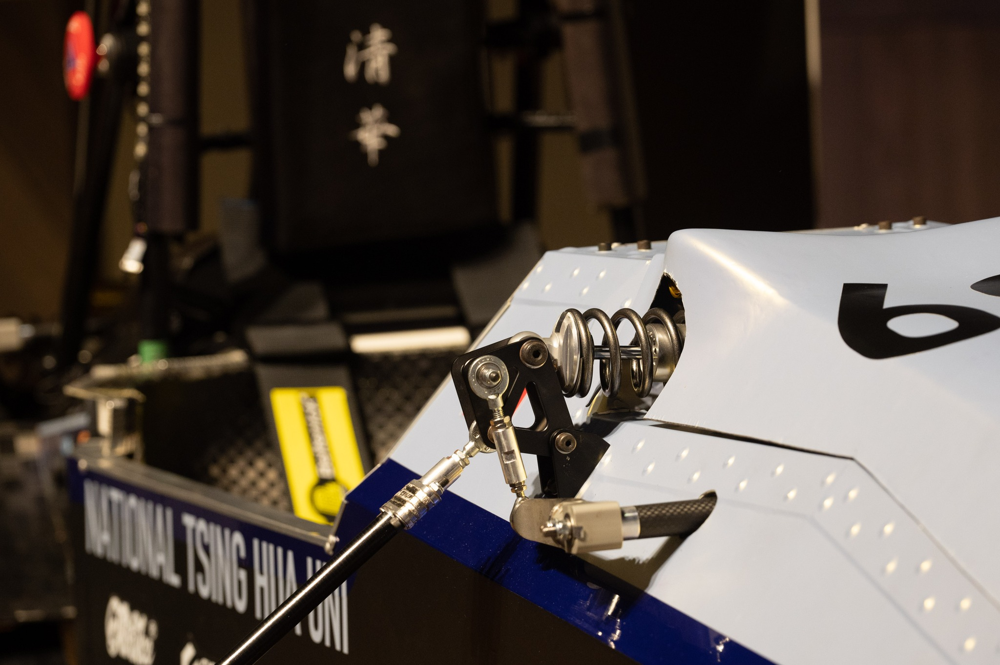
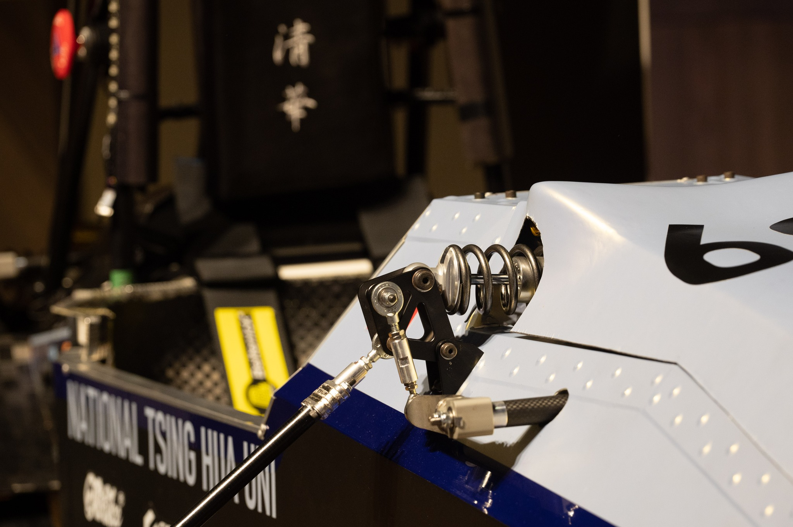

Cheng Han Yu
I am an M.S. candidate in Mechanical and Aerospace Engineering at UC San Diego, working as a Graduate Student Researcher on integrating da Vinci surgical tools (dVRK) with humanoid robots. My work focuses on system-level design, sensing, and control for complex, safety-critical robotic platforms.
Across robotics and motorsport, my experience spans LiDAR SLAM, robot kinematics, finite element analysis, and vehicle dynamics. I thrive on turning complex, interdisciplinary ideas into robust systems that perform in the real world.

Project Experience
LiDAR-Based SLAM & Mapping Click Details
Developed a complete 2D SLAM pipeline to process raw LiDAR scans and odometry data, accurately estimating the robot's trajectory and constructing a high-resolution occupancy grid map.


IMU Orientation Tracking & Panorama Reconstruction Click Details
Developed a quaternion-based orientation tracking pipeline fusing gyroscope motion models with accelerometer observation models. Formulated trajectory estimation as a constrained least-squares optimization on the Riemannian manifold of unit quaternions. Optimized via projected gradient descent, reducing drift and achieving a >80% improvement in roll/pitch accuracy.


Autonomous Tower of Hanoi with a 4-DOF Robotic Arm
Built an autonomous Tower of Hanoi solver on a 4-DOF robotic arm using ROS and Python. A custom inverse-kinematics solver and time-parameterized, jerk-limited trajectory generator execute the optimal move sequence.


4WD EV Racecar Torque-Vectoring Control Click for Demo
Developed a yaw-moment–based torque-vectoring controller fusing IMU yaw rate, steering angle, and wheel-speed signals. Implemented in C/C++ (ECU loop ~1 kHz), improving cornering performance by ~10% and contributing to P4 acceleration at FSCzech 2023.
 

Double Wishbone Suspension Design Click for Gallery
Designed and manufactured a double-wishbone suspension with an integrated anti-roll bar for TH07. Performed FEA to optimize the weight-to-stiffness ratio, reducing system weight by 20%. Conducted multibody kinematics analysis in ADAMS and utilized a Pacejka tire model pipeline.
Research
Humanoid Robots for Medicine: dVRK Tool Integration Click Details
Prototyped a mechatronic actuator interface integrating da Vinci (dVRK) surgical tools with a Unitree humanoid robot. Developed low-level control mappings and kinematic calibration to resolve cable-driven coupling, achieving sub-millimeter repeatability.


Nonlinearity Modification of CMOS-MEMS Resonators Click Details
International Conference on Solid-State Sensors, Actuators and Microsystems (ICSS), 2024
Investigated methods to enhance the power handling of CMOS-MEMS resonators by mitigating amplitude-to-phase modulation (AM-PM) noise. Designed and fabricated modified cantilever and fixed-fixed beams utilizing TSMC 0.35 µm CMOS processes to control geometric and capacitive nonlinearities.
Leadership Experience

Team Leader Click for Details
Led an 80+ member race team to build an autonomous 4WD electric racecar. Managed Taiwan’s first Formula Student carbon fiber wheel rim project and secured first place at FS Taiwan 2024.
Leader of Suspension / Suspension Engineer
Led the suspension department for 7th generation racecar(TH07). Designed and optimized double-wishbone suspension systems, achieving 20% weight reduction through FEA analysis and contributing to top-tier dynamic performance at Formula Student competitions.